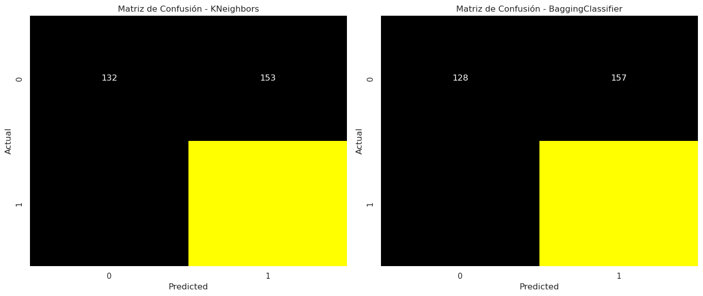
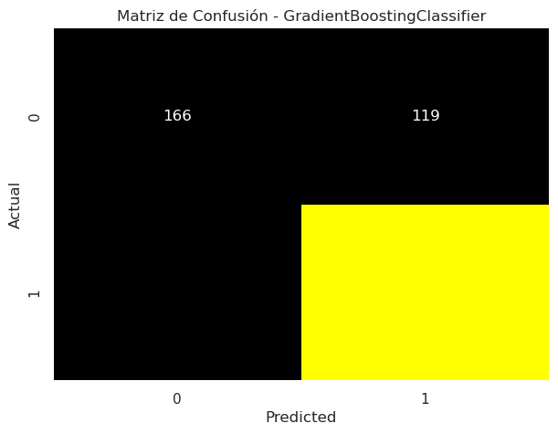

Análisis Detallado y Simple del Proyecto
Bagging con KNeighbors
KNeighbors:
- La precisión del clasificador KNeighbors es del 70.4%.
Bagging con KNeighbors:
- La precisión del clasificador BaggingClassifier con KNeighbors como base es del 69.7%.
Boosting con GradientBoostingClassifier
GradientBoosting:
- La precisión del clasificador GradientBoostingClassifier es del 72.1%.
Modelo Utilizado:
Bagging con KNeighbors
Bagging con KNeighbors
- Bagging con KNeighbors como base.
Librerías y Lenguaje de Programación:
- Lenguaje de Programación: Python. - Librerías: pandas para manipulación de datos, sklearn para modelos de clasificación.
Base de Datos:
- El análisis se realizó en un conjunto de datos de comportamiento de consumidores de comercio electrónico (ECommerce_consumer_behaviour.csv).
Boosting con GradientBoostingClassifier
Modelo Utilizado:
- GradientBoostingClassifier.
Librerías y Lenguaje de Programación:
- Lenguaje de Programación: Python. - Librerías: pandas para manipulación de datos, sklearn para modelos de clasificación.
Base de Datos:
- El análisis también se llevó a cabo en el conjunto de datos de comportamiento de consumidores de comercio electrónico.
Proceso ETL:
Bagging con KNeighbors
Carga de Datos:
- Se leyó el conjunto de datos de comportamiento de consumidores de comercio electrónico.
Preprocesamiento:
- Se separaron las características (X) y la variable objetivo (y). - Se dividió el conjunto de datos en entrenamiento y prueba.
Modelo KNeighbors:
- Se entrenó y evaluó un clasificador KNeighbors.
Modelo BaggingClassifier:
- Se creó un clasificador BaggingClassifier con KNeighbors como base. - Se entrenó y evaluó el modelo BaggingClassifier.
Boosting con GradientBoostingClassifier
Carga de Datos:
- Se leyó el conjunto de datos de comportamiento de consumidores de comercio electrónico.
Preprocesamiento:
- Se separaron las características (X) y la variable objetivo (y). - Se dividió el conjunto de datos en entrenamiento y prueba.
Modelo GradientBoostingClassifier:
- Se entrenó y evaluó el clasificador GradientBoostingClassifier.
Conclusiones Finales del Proyecto:
Bagging con KNeighbors:
- Aunque Bagging no mejoró la precisión en comparación con KNeighbors, es útil para reducir la variabilidad y mejorar la generalización del modelo. - El modelo puede beneficiarse de la afinación de hiperparámetros para mejorar aún más su rendimiento.
Boosting con GradientBoostingClassifier:
- Gradient Boosting demostró ser efectivo, superando la precisión de KNeighbors y Bagging. - La capacidad de Gradient Boosting para corregir errores y mejorar la precisión hace que sea una opción valiosa para este conjunto de datos específico.
En resumen, el análisis demuestra que diferentes enfoques de ensamblado tienen impactos variables en la precisión del modelo. La elección entre Bagging y Boosting dependerá de la naturaleza específica de los datos y los objetivos del análisis.
Repositorio
Si deseas validar cómo se construyó el algoritmo y la base de datos, puedes visitar el siguiente enlace. Allí encontrarás todos los detalles del código y los datos utilizados en este proyecto.
 👉 Haz clic aquí 👈
👉 Haz clic aquí 👈